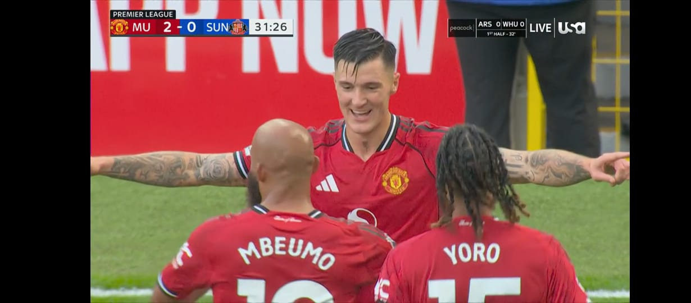

Personal web Pandu

Atikel
| Hobby | Penjelasan |
|---|---|
| Menonton pertandingan sepak bola | Menonton pertandingan sepak bola adalah aktivitas melihat permainan antara dua tim yang saling berlomba memasukkan bola ke gawang lawan, yang dapat dinikmati di stadion atau melalui layar, dan memberikan manfaat seperti hiburan, penguatan hubungan sosial, latihan fokus, serta sarana untuk mempelajari strategi dan taktik permainan. |
 Memainkan Fc Mobile 26 |
EA Sports FC Mobile adalah permainan video simulasi Sepak bola yang dikembangkan oleh EA Mobile dan EA Kanada dan dipublikasi oleh EA Sports untuk IOS dan Android. Diluncurkan tanggal 11 Oktober 2016 sebagai pengganti gim seluler FIFA Ultimate Team, untuk IOS dan Android. |
 Memainkan Mobile legend |
Mobile Legends (ML) adalah permainan seluler bergenre Multiplayer Online Battle Arena (MOBA) yang dikembangkan dan diterbitkan oleh Moonton. Dalam game ini, dua tim beranggotakan lima pemain saling bertarung untuk menghancurkan markas musuh sambil mempertahankan markas mereka sendiri. Setiap pemain mengendalikan "Hero" unik dengan kemampuan dan peran berbeda seperti Tank, Marksman, atau Mage, dan permainan berfokus pada kerja sama tim untuk meraih kemenangan. |
 Bermain badminton |
Badminton, atau bulu tangkis, adalah olahraga raket yang dimainkan oleh dua pemain (tunggal) atau dua pasangan (ganda) yang berlawanan di lapangan yang dipisahkan oleh jaring. Tujuan permainan adalah memukul kok atau shuttlecock melewati jaring agar jatuh di area lapangan lawan, sambil mencegah kok jatuh di area sendiri. Peralatan utama dalam permainan ini adalah raket dan kok. |
 Futsal |
Futsal adalah sejenis sepak bola yang dimainkan di lapangan yang lebih kecil oleh dua tim yang masing-masing beranggotakan lima pemain, dengan tujuan untuk mencetak gol ke gawang lawan. Berasal dari kata "futbol sala" (sepak bola dalam ruangan) dalam bahasa Spanyol, futsal menekankan teknik, kelincahan, dan kecepatan karena ruang yang terbatas dan bola yang lebih kecil serta berat. |
 Mendengarkan musik |
Mendengarkan musik adalah sebuah aktivitas hiburan dan hobi yang memiliki banyak manfaat positif untuk kesehatan fisik, mental, dan emosional. |
TikTok

Youtube